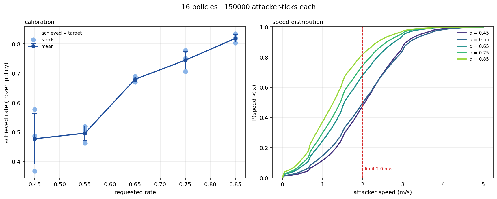
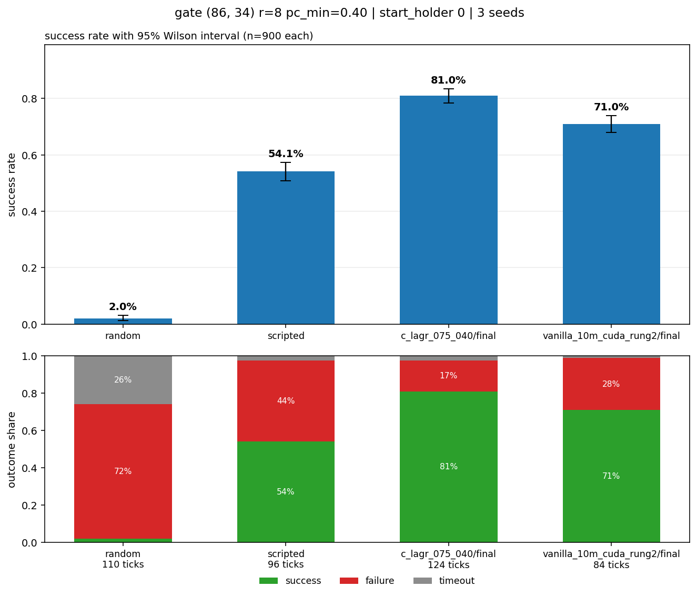
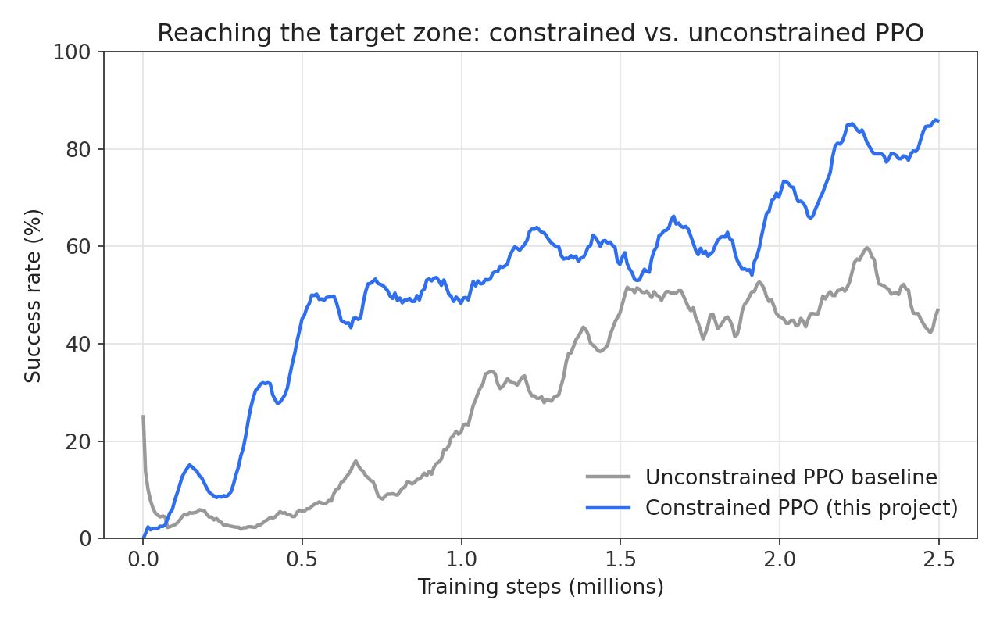
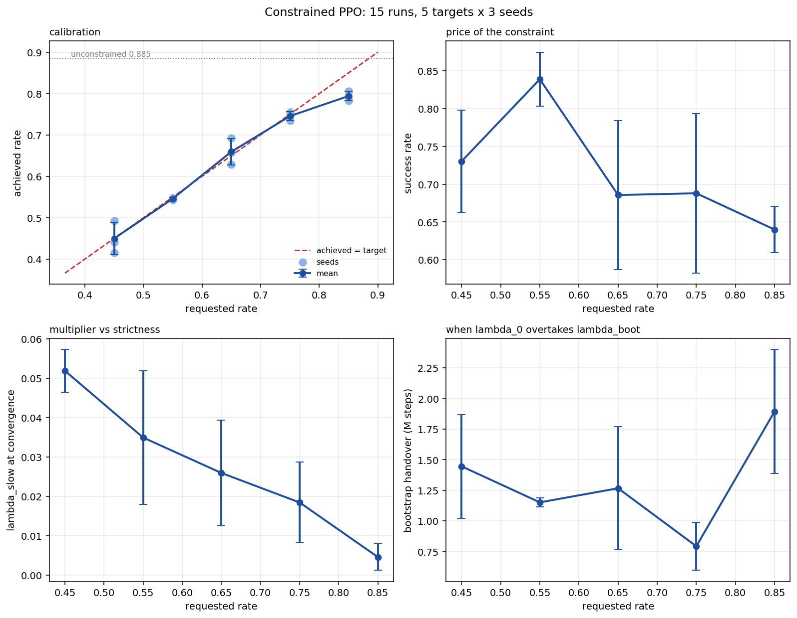
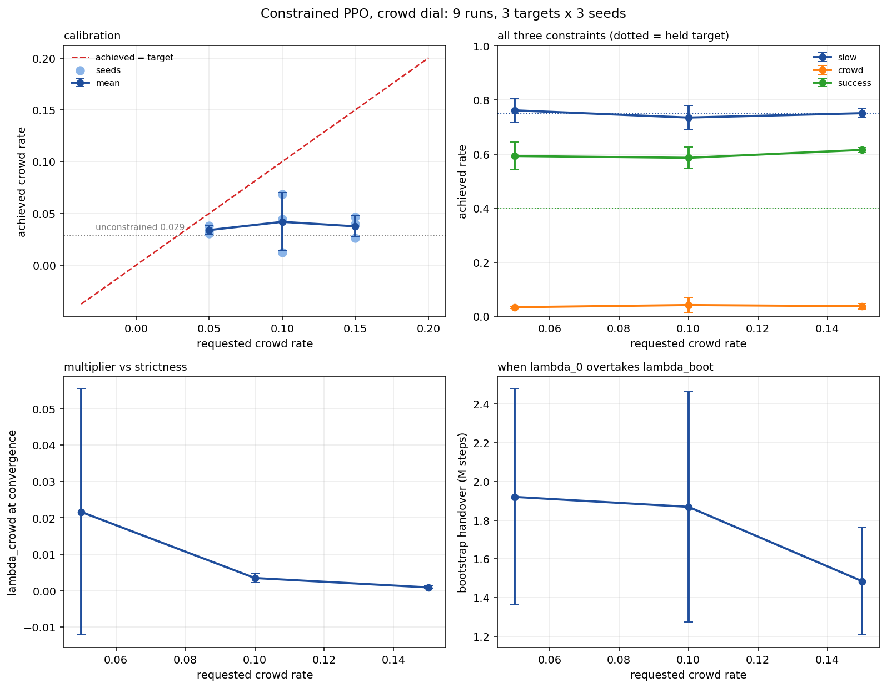
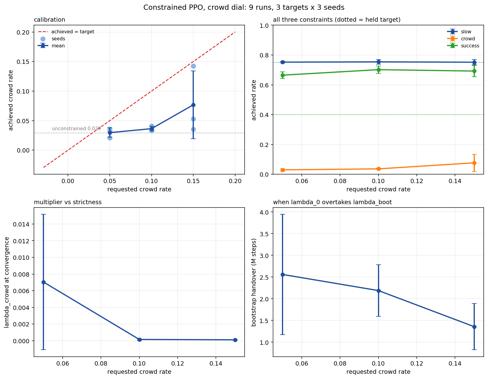
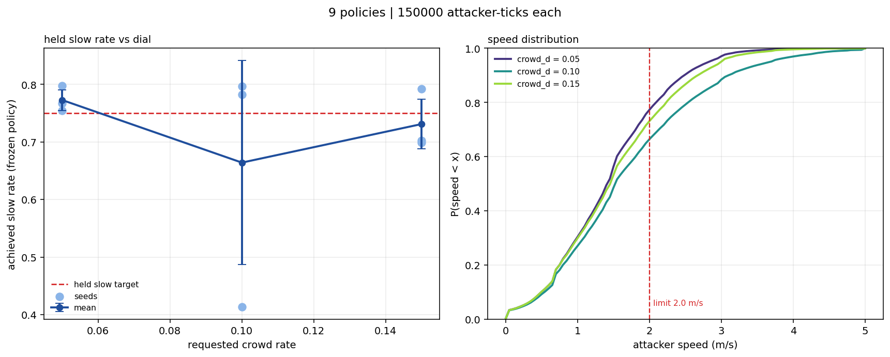

These come from assets/speed_probe.csv. Each run's final weights,
replayed for 150,000 attacker-ticks with learning switched off. Bias is
−0.0066, so the sweep isn't pulling in one direction; what's left is scatter.
Everything below uses these rather than the training logs, for reasons I get
to in a moment.

Two measurements, and they disagree
Read the same sweep off the training logs instead and you get MAE 0.0241, slope 0.8882, R² 0.9606, 11 of 15 inside threshold. Better on every count. I don't think it means much. A tail mean averages over updates where the policy was still moving, so it smooths away the exact error the measurement exists to catch. Both are in the table below so you can see how far apart they land.
| Measurement | MAE | Slope | R² | Feasible |
|---|---|---|---|---|
| Frozen policy, 150k attacker-ticks | 0.0442 | 0.9300 | 0.8618 | 9 / 15 |
| Training-log tail mean | 0.0241 | 0.8882 | 0.9606 | 11 / 15 |
Frozen numbers from assets/speed_probe.csv. Tail means from
assets/constraint_runs.csv, via
model/constrained_analysis.py.
The constraint made it learn faster
I expected the constraint to cost something. Tie one hand behind the agent's back and it should get worse at the actual task. Instead the constrained policy at 2.5M steps beat an unconstrained baseline I'd trained out to 10M. Four times the samples, worse result. I went looking for the bug for a good while before I accepted there wasn't one.


The price of the constraint is non-monotone
If the constraint were purely a cost, success should fall off as the threshold tightens. It doesn't. The peak sits at d = 0.55, well inside the range, and loosening past that makes things worse rather than better. Tightening costs as well: 0.85 gives up around 20 points against the peak. There's a sweet spot in there, and I didn't put it there.

Reproducibility degrades as the constraint tightens
This is the part that bothers me. At d = 0.65 the three seeds land within a standard deviation of 0.010, about as tight as I could ask for. At d = 0.45 they land on 0.368, 0.577 and 0.488. That's sd 0.105, a spread wider than the gap between two neighbouring targets in the sweep. Averaged over seeds the dial reads true; on any single run it might not. The tight end is where the optimiser has least room to move and it clearly feels it.
| Target d | Seed 1 | Seed 2 | Seed 3 | Mean | SD | Range |
|---|
Achieved rate per seed, measured on frozen policies.
Every run
Fifteen runs. Five targets, three seeds each, 2.5M steps apiece, bootstrap success constraint pinned at 0.40 the whole way. The six greyed rows finished above their threshold.
| Run | Seed | Requested | Achieved | Error | Speed m/s | Feasible |
|---|
From assets/speed_probe.csv, frozen policies, 150,000
attacker-ticks each. Feasible here means the achieved rate landed at or
below the threshold it was given.
Per-target aggregates
| d | n | Achieved | SD | Success | SD | Speed | Ep. len |
|---|
From assets/constraint_targets.csv. These are training-log tail
means, so the achieved column is the flattering one and the success column
is a training-window rate, not the terminated-episode rate in Fig 2. Watch
what episode length does as the constraint bites. The team takes longer
because it has stopped sprinting.
Second constraint: crowd_disc
slow held fixed at d = 0.75, crowd_disc
added as a second constraint and swept at 0.05, 0.10 and 0.15, three seeds
each. First at the same 2.5M-step budget as the sweep above, then rerun to
5M. The full story, including why the rerun happened, is in the
write-up.

slow keeps tracking
its held 0.75 line on average, though not on every seed.


slow stayed calibrated while
crowd_disc was the dial being swept. There is no 5M
version of this probe. The 5M numbers everywhere on this page are
training-log tail means, not an independent replay.
Per-target aggregates, crowd sweep
2.5M steps:
| Requested crowd | n | Achieved crowd | SD | Slow (held) | Success | Ep. len |
|---|
5M steps:
| Requested crowd | n | Achieved crowd | SD | Slow (held) | Success | Ep. len |
|---|
From assets/constraint_targets_crowd.csv and
_5m.csv, both training-log tail means.
Every crowd-sweep run
Eighteen runs: three crowd targets x three seeds, at both budgets. Feasible here means slow, crowd, and the success bootstrap all landed inside their thresholds together.
| Run | Budget | Requested | Crowd | Slow | Success | Ep. len | Feasible |
|---|
From assets/constraint_runs_crowd.csv and
_5m.csv. Greyed rows missed at least one of the three
constraints.